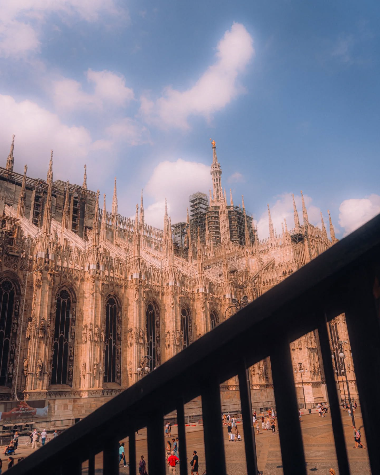
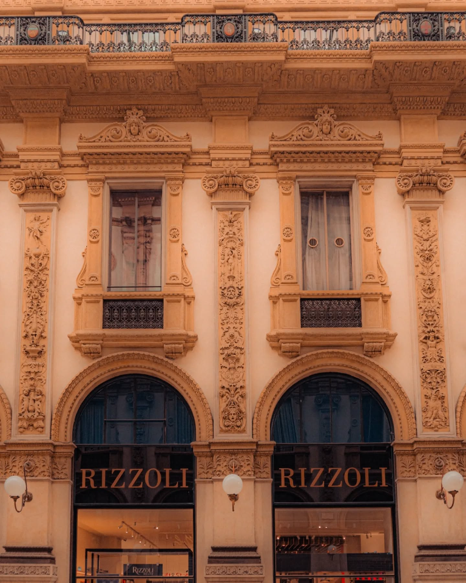
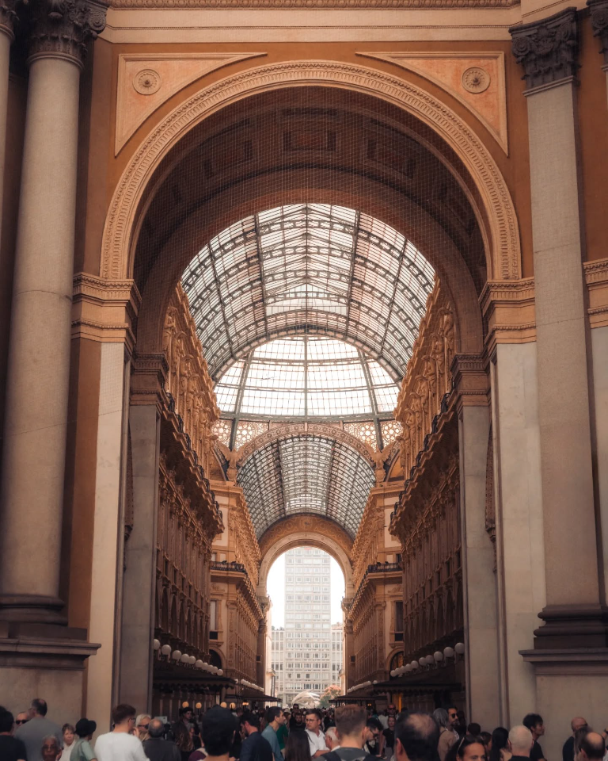
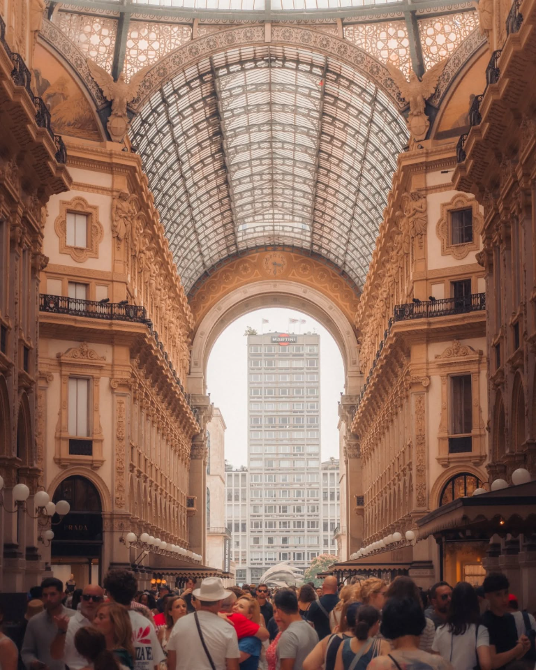
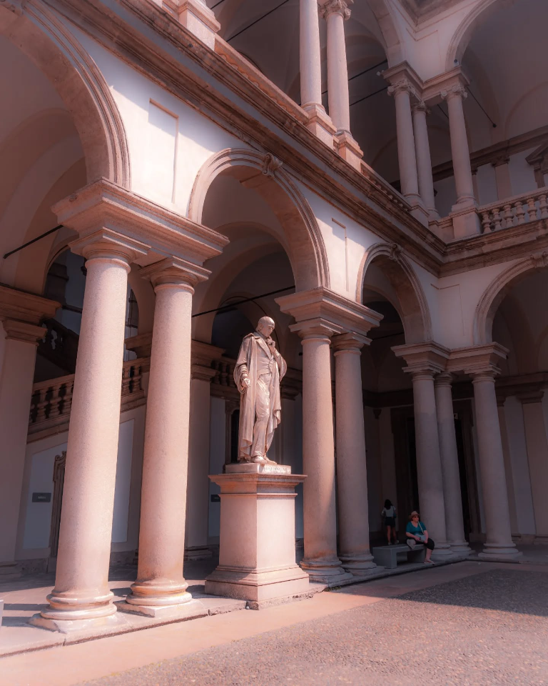
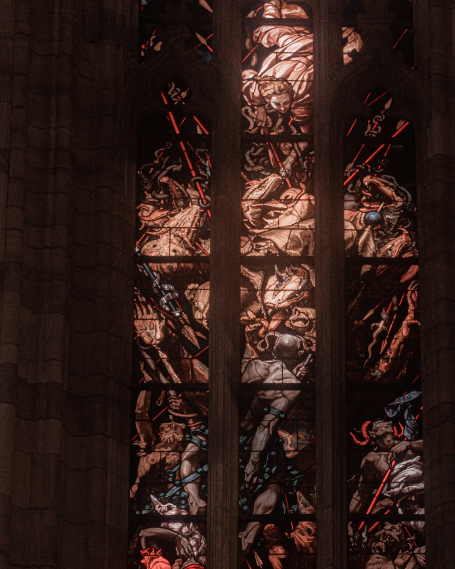
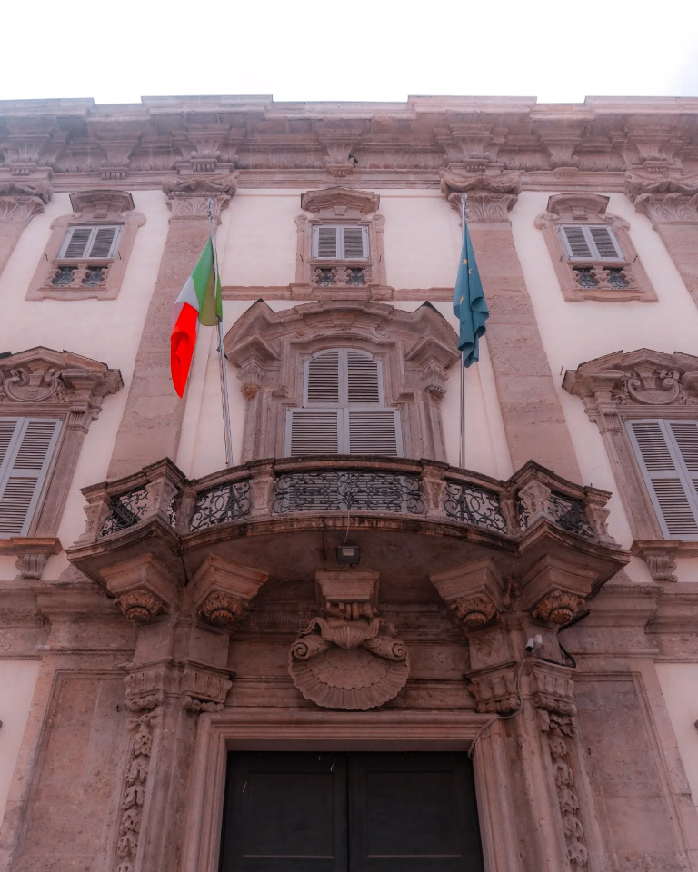
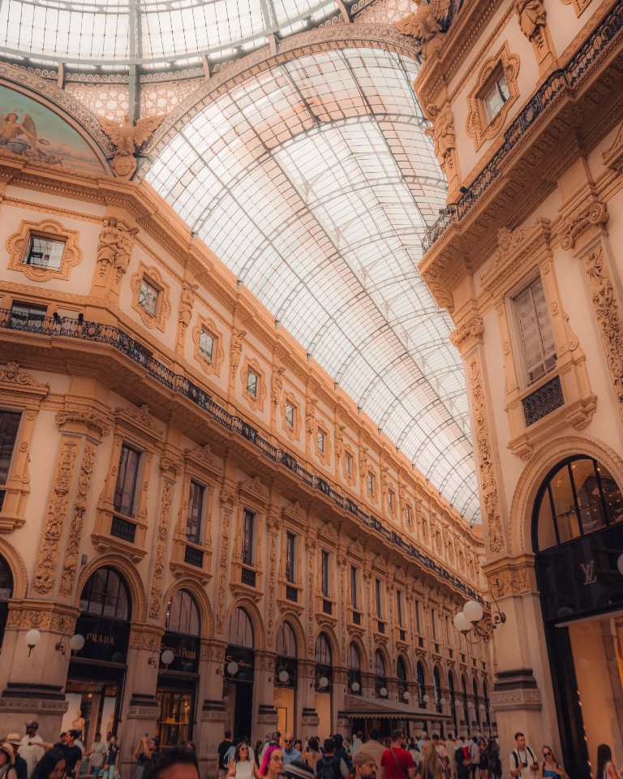
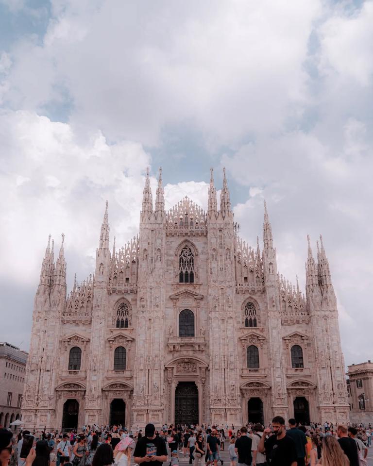
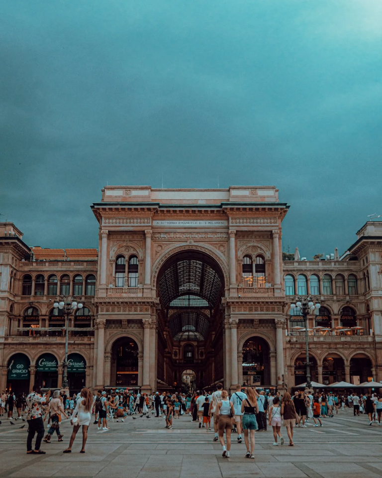

Cada parada tiene su propio capítulo: primero, la historia del viaje y, después, las fotografías de ese destino.
PARADA 01
ITALIA
Milán
Milán fue nuestra primera parada, de apenas 10 horas, ya que nuestro vuelo hacía escala en la lujosa ciudad italiana.










PARADA 02
SERBIA
Las fotos y recuerdos de Serbia aparecerán aquí.
PARADA 03
RUMANÍA
Las fotos y recuerdos de Rumanía aparecerán aquí.
PARADA 04
MOLDAVIA
Las fotos y recuerdos de Moldavia aparecerán aquí.
PARADA 05 · REGIÓN DE MOLDAVIA
TRANSNISTRIA
También conocida como Pridnestrovia.
Las fotos y recuerdos de esta región aparecerán aquí.
PARADA 06
HUNGRÍA
Las fotos y recuerdos de Hungría aparecerán aquí.
PARADA 07
AUSTRIA
Las fotos y recuerdos de Austria aparecerán aquí.
PARADA 08
ALEMANIA
Las fotos y recuerdos de Alemania aparecerán aquí.
PARADA 09
FRANCIA
Las fotos y recuerdos de Francia aparecerán aquí.